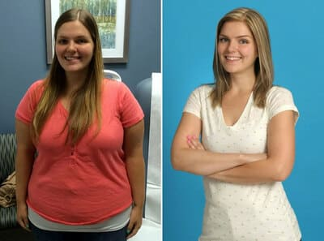

CSODÁVAL HATÁROS MÓDON LEADOTT 23 KG-T!
Dalszerző, egy 10 éves fiú édesanyja, válása óta sikertelenül küzdött a súlyával, számos módszert kipróbált, és most végre megtalálta a módját, hogy látható eredményeket érjen el.
Adele-nek semmilyen diéta nem segített, beleértve az intervallumos böjtöt se (amit szigorúan szakember felügyelete mellett csinált!). A művésznő bevallotta, hogy e tekintetben kevés akaraterővel rendelkezik, így a szigorú diéta betartására tett szinte minden próbálkozása jobb esetben összeomlással, rosszabb esetben pedig az ellenkező eredménnyel, még nagyobb súlygyarapodással végződött.
A helyzetet tovább rontotta a filmezéssel és turnézással járó sűrű időbeosztás, ami semmiképpen sem volt összeegyeztethető az egészséges életmóddal, hiszen az egészséges táplálkozás napi 4-5 alkalommal, kis adagokban történő rendszeres étkezésből áll. De Adele-nak gyakran sietve kell ennie, és tápérték szempontjából nem a legjobb ételeket. Ennek ellenére az énekesnő megtalálta a módját, hogy még ilyen nehéz körülmények között is eredményeket érjen el.
Exkluzív! Ez az első alkalom, hogy Adele megosztotta velünk a történetét, amelyet korábban mindenki elől elrejtett, mert szégyellte, hogy képtelen volt irányítani önmagát.
Oprah Winfrey amerikai műsorvezető másodszor is randizik Adele-lel. Az új kiadás igazi reveláció volt a művész számára! Először osztotta meg sikeres fogyásának titkát, és azt, hogyan tartja magát még mindig ilyen formában.
Jó napot! Aki nem tudja, a nevem Adele, 33 éves. Nemrég visszatértem a színpadra, és folytattam az albumok felvételét. Ma egy új ember vagyok: könnyű és egészséges. A múltbeli Adele pedig egy bizonytalan nő, aki évek óta küzd, hogy leadja a felesleges kilókat és összeszedje magát. Sikerült 23 kg-ot fogynom, ami a 175 cm-es magasságomhoz képest elég jó. Szeretném megosztani veletek a történetemet, és remélem, hogy sok embernek tudok segíteni abban, hogy megszabaduljon a súlyfeleslegtől!
Kislánykorom óta nem dicsekedhettem a súlyommal, és persze a szülés és a férjemtől való elválás után sikerült nagyon elhíznom. Egyszerűen szörnyű.
A válásom volt a végső pont, ami után eldöntöttem, hogy valaminek változnia kell. Ekkor döntöttem el végül, hogy elérem a kitűzött céljaimat. Kezdetben minden kísérlet kudarcot vallott, és rövid távú eredményeket hozott. De vannak pozitívumok is: a tapasztalat értékes volt számomra. A testemen végzett számos kísérlet segített abban, hogy kidolgozzam saját fogyókúrás módszertanomat.
Sok diétát kipróbáltam már, mindig szakemberek felügyelete mellett. A szigorú diéták, bár hatékonyak, legtöbbször bukáshoz vezetnek. A koplalás sem segített rajtam - csak plusz kilókat szedtem fel. Most már tartom magam egy bizonyos étrendhez és életmódhoz, ami segít megszabadulni a súlyfeleslegtől.
Megerősítem! A jelenlegi megjelenésed pedig egyszerűen hihetetlen! Mi késztetett arra, hogy elkezdj változni, és hogyan kezdted el a célod felé vezető utat?
Valószínűleg minden lány álma, hogy bármit ehet, nem hízik el, és közben remek alakja van. Szerencsések vagyunk, hogy a 21. században ez valósággá vált, de eleinte elragadtattam magam a sok mindenféle diétával, kipróbáltam a legnépszerűbbeket. Egy ideig kefiren és almán éltem, a múlt és a jelen generáció szakértőinek szerzői diétáin, majd egy hétig csak zöldséget ettem, megpróbáltam teljesen kiiktatni a szénhidrátokat, de az ilyen diéták hatása egyáltalán nem volt tartós.
Mint láthatják, nehezen mozogtam, állandóan izzadtam a színpadon, és egy helyett 2(!) állam volt...
Amint elkezdtem normálisan enni - a kilók visszajöttek, és még többet hoztak vissza, mint korábban. Az ilyen diéták elég nehezek voltak, néha visszaestem, ami végül minimalizálta az eredményeket. Ráadásul észrevettem, hogy a körmeim törni kezdtek, a hajam a végeinél töredezett, fáradtnak tűntem, és táskák voltak a szemem alatt. Nagyon gyakran fájt a fejem és fáradt voltam, még ha nem is csináltam igazán semmit, nem volt energiám edzeni, és a súlyom nem igazán engedte, hogy futni tudjak. Azt mondják, hogy a futás egyáltalán nem tesz jót, nagyon megterheli a térdízületeket.
Mi történt ezután? Most már más ember vagy.
Aztán mindezen kudarcok után teljesen elkeseredtem, amikor egészségügyi problémákat diagnosztizáltak nálam: hormonális egyensúlyhiányt és nőgyógyászati rendellenességeket. A szakértők azt mondták, hogy sürgősen meg kell szabadulni a súlyfeleslegtől. Különben soha többé nem tudnék gyereket vállalni, pedig szeretnék! Úgy döntöttem, hogy lehetőségeket keresek. És megtaláltam. Augusztusban találkoztam Ellen DeGeneresszel, aki a szomszédom lett. Ő ajánlott nekem egy táplálkozási szakembert. Olyan készítményt javasolt, amely a lehető legrövidebb időn belül segíthet a felesleges kilók leadásában. A feltételem az volt, hogy a terméknek növényi kivonatokat kell tartalmaznia, nem fogadok el reklámozott fogyókúrás termékeket!
Néhány hétig szedtem, és célul tűztem ki, hogy leadom a súlyfelesleget, mielőtt elkezdeném forgatni az új műsoromat, amelyben én leszek a műsorvezető.
A egy növényi kivonatokat tartalmazó termék, sok jótékony anyaggal rendelkezik, képes felgyorsítani az anyagcserét, és lehetővé teszi, hogy rövid idő alatt, fájdalmas diéta nélkül leadja a felesleges kilókat, és ami a legfontosabb — a kúra befejezése után a leadott kilók nem tértek vissza! Egy hét múlva már tényleg jobban éreztem magam. SEMMIT SEM VÁLTOZTATTAM AZ ÉTRENDEMEN, pontosan ugyanazt ettem, mégis fogytam. Azt hittem, hogy 1,5-2 kg-ot fogytam, de amikor a mérlegre álltam, nagyon meglepődtem — MÍNUSZ 3,5 kg! Hogy lehetséges ez? Ilyen hatása van a napi 2 kapszulának?
Egyszerűen megijedtem, és elrohantam egy szakemberhez. Megerősítette, hogy ez egy normális folyamat, nincs veszély, és megnyugtatott. Dióhéjban, ez egyszerű: vegyen be egy kapszulát mindennap étkezés előtt, és öblítse le vízzel. Szinte bármilyen típusú, bármilyen zsírtartalmú ételt ehetsz, és megfigyelheted, hogyan változik a tested. Szépség! Tetszik ez a folyamat!
Aztán már vártam a csoda megismétlését. Az ember gyorsan hozzászokik a jóhoz, és én már nem voltam hajlandó beérni hat kilónál kevesebbel. A kúra közepére 9 KG-ot fogytam! Mintha szárnyaim nőttek volna! Kiszedtem egy kúrát és 23kg-ot fogytam minden erőfeszítés, diéta vagy edzés nélkül! Az érdekes az, hogy már jóval több mint 2 hónap telt el a változtatásom óta, már nem szedek , és a súlyom nem jött vissza. Ez egy igazán szilárd eredmény, bár a biztonság kedvéért tartok otthon néhány csomagot. Most már nem szégyellek nyilvánosan megjelenni.
Lenyűgöző! Adele, biztos vagyok benne, hogy sok néző kíváncsi lesz arra, hogy vannak-e striák egy ilyen intenzív fogyás után?
- Nem, a észrevehetően javítja a rugalmasságot, bőrfeszesítő hatást fejthet ki, ezzel nincs probléma.
Oprah: Mi van a bőrrel? Nincsenek striák?
- A bőr tökéletes! Sem nekem, sem a barátaimnak nem volt ezzel problémája.
Mi a helyzet a táplálkozással? Milyen diétát javasolnál?
- Most a fogyókúra ellen vagyok. Sok diéta egyszerűen káros lehet a szervezetre! Elegendő bevenni a naponta kétszer étkezés előtt. Az igazat megvallva kevesebbet akarok enni, mint korábban, mivel a képes feldolgozni a már lerakódott zsírokat energiává.
Tényleg szükséges este 6 óra után abbahagyni az evést?
- Ez nevetséges! Ehetsz úgy, ahogy szoktál, vagy ahogy sikerül! Természetesen általában az egészség érdekében gyakran kell enni keveset! De ez nehéz, és az én esetemben nem mindig sikerül.
Adele, biztos vagyok benne, hogy nézőink már alig várják, hogy megtudják, hol lehet hozzájutni ehhez a , és hogy más országok állampolgárai számára egyáltalán lehetséges-e a beszerzése.
- Ma a csak sorsoláson keresztül lehet megkapni, továbbá esély van arra, hogy akár 50% kedvezményt nyerjen a termékre. A jótékonysági program már elindult az európai országokban. Sajnos a csomagok száma korlátozott. De minden lánynak esélyt akarok adni a változásra. A program jelenleg Magyarországon van érvényben, és ez az utolsó ország, ahol a termék akciósan kapható. Természetesen a program az endokrinológia és a dietetika szakembereinek támogatásával indult.
Köszönöm, Adele. Remélem sikerült mindent felvenni? Nos, nagyon érdekes volt hallani a történetedet! Talán mondani akarsz valamit a nézőknek?
- Én köszönöm! Csak annyit mondok, hogy ne késlekedj a magad jobb verziója felé vezető úton, mert mielőtt észrevennéd, egy év alatt újabb tucat kilót szedhetsz fel, és lehet, hogy már túl késő lesz bármit is tenni ellene. Továbbá, aki szeretné kipróbálni ezt a terméket - írja meg visszajelzését a honlapon!
Joshua Bernard, táplálkozási szakértő megjegyzése, aki segített Adele-nek a fogyásban:
Joshua Bernard, a dietetika és az endokrinológia szakértője, a weight loss techniques szerzője
"A fogyási
technikák szakértőjeként és szerzőjeként biztosíthatom
önöket. A népszerű módszerek - alacsony kalóriatartalmú
diéták, mono diéták, ájulásig tartó fizikai
megerőltetéssel való kínzás - mindez az ÖN ÉS AZ
EGÉSZSÉGE ellen dolgozik! Egyetértek, van egy átmeneti hatás, de a
végén lassabb, "elpusztított" anyagcserét kaphat.
És ahhoz, hogy megszabaduljon a felesleges kilóktól, és ne hízzon a
jövőben, rendkívül gyors anyagcserére van szüksége.
A
olyan természetes kivonatokat tartalmaz, amelyek 5-7-szeresére
gyorsíthatják fel az anyagcsere-folyamatokat. Ez lehetővé teszi a szervezet
számára, hogy gyorsan felhasználja a tárolt zsírtartalékokat,
és megakadályozza az újak képződését. Jelenleg úgy
gondolom, hogy a egy
újgenerációs termék, amely valóban
segíthet megszabadulni a felesleges kilóktól és egészséges
maradni.
A Dietetikai és Táplálkozástudományi
Kutatóintézetben kutatást végeztünk a Leptigen Meridian Diet
komplexum tulajdonságairól.
A már
aktívan
használják művészek, sztárok és előadók. Most
megpróbáljuk eljuttatni a készítményt a hétköznapi
emberekhez. És mindenki az elért pozitív eredményekről beszél.
A felméréseknek köszönhetően statisztikákat tudtunk
összeállítani:
1. Fogyás az
emberek egy csoportjában -7kg-tól -31kg-ig - az emberek 96%-a
2.
Megjegyezték javult a közérzet és a
tónus - az emberek 97%-a
3. Jelentős a máj
és a hasnyálmirigy működésének javulása — az
emberek 94% - a
4. És ennek eredményeképpen 97%-os
javulás a szervezet anyagcsere-folyamataiban.
A pozitív
eredmények életkortól, egészségi állapottól és
nemtől függetlenül jelentkeztek. Az átlagos
testsúlycsökkenés kúránként 8 és 27 kg
között van.
Összefoglalva, sokkal könnyebb időben megszabadulni a túlsúlytól, mint a magas vérnyomás, a magas vércukorszint, az elzáródott erek és más kórképek szövődményeivel küzdeni. Ezt minden épeszű embernek meg kellene értenie.
Központunk felmérést végzett olyan emberek körében, akik különböző fogyókúrás módszereket alkalmaztak, és 98%-uk említette a , és azt mondta, hogy ajánlaná barátainak.


Munkám miatt hajlamos vagyok túlsúlyos lenni, egyszer régen, olyan régen, hogy számomra úgy tűnik, hogy ez már nem igaz, majdnem 140 kg-ot nyomtam. Megrendeltem a , és most elképzelhetetlen, de 71 kg-ot nyomok. Az eredmény mínusz 69 kg két kúra alatt! És tartom a súlyom! Büszkén mutatom meg a képeimet - a fogyással vívott harcom eredményét. Nem is hittem, hogy az én koromban ennyire meg tudok változni, de kiderült, hogy ez minden életkorban valós! Köszönjük Adélnak és a szakértőknek ezt a programot és a tanácsokat! A kedvezményesen nyert csomag pedig nagyon gyorsan megérkezett. Köszönöm a nyereményjátékot!

Megnyerte a nyereményjátékot - ez egy nagyszerű termék! Már pár hete szedem. 14 kg-mal könnyebb lettem!!! A bőröm egy kicsit se nyúlt meg. A zsír először csak onnan megy, ahonnan kell. Nagyon elégedett vagyok ezzel a termékkel. Minden barátomnak ajánlottam, és mindenkinek segített.
Mindig is csodáltam Adele-t. A változása arra ösztönzött, hogy én is kipróbáljam. 2 hét telt el a kúra vége óta. Megszabadultam extra 57 kg-tól!!! Nagyon hálás vagyok! Nagyon megtetszett a készítmény! Hat hónappal ezelőtt én is nyertem a nyereményjátékon, és már az első napokban láttam az eredményeket.

Teljesen egyetértek. Nagyszerű eszköz a fogyáshoz! Ha tudnák, milyen izgalmas, amikor reggel felébredsz, ránézel a mérlegre, és ott van, mínusz 1-2 kg!
A 25 kg-mal könnyebbé tett, ami nagyon jó eredmény!

Tegnap megkaptam a csomagot, és gyorsan megérkezett! A tanácsadó, aki felhívott, hogy tisztázza a szállítási címet, válaszolt minden kérdésemre a termékkel kapcsolatban, minden megérkezett, kaptam egy sms-t a boltból - azonnal rohantam a postára, hogy átvegyem, és ma kezdem elveszíteni a felesleget)))) Egyszóval, én is ugyanilyen eredményeket akarok! Köszönöm a cikket és a linket a megrendeléshez, legalább nem kell keresni!
A és a fitneszórák nagyszerű eredményeket hoznak. Nem számolom a kalóriákat, csak időnként csökkentem az ételek mennyiségét, és napi 4-5 alkalommal eszem. Nem mondtam le a lisztből készült termékek fogyasztásáról, csak minimálisra csökkentettem őket. Azt eszem, amit akarok, de csak ésszerű keretek között.
2 kúra alatt 37 kg-ot fogytam, mindenféle felesleges diéta vagy kimerítő éhezés nélkül, mindent megettem, mindezt a köszönhetően!
Sziasztok, én is szedem a . A nővérem hozta nekem az USA-ból egy évvel ezelőtt, akkor még nem is volt nálunk... Őszintén - ez az az eredmény, amiről még csak nem is álmodtam! Butaságnak tartottam, és nem akartam belevágni, de a nővérem rábeszélt, hogy próbáljam meg. Elkezdtem szedni, hamarosan a boltba kellett szaladnom, hogy kicseréljem a ruhatáram, a nadrágom kezdett nagy lenni )))))))) Sikerült 28kg-ot fogynom!!! Most a súly stabilizálódott, és nem változik!!! Ha azt mondom, hogy boldog vagyok, az még enyhe kifejezés!!!! :))) Mindenkinek ajánlom, hogy próbálja ki! Legalább néhány hétig, és az eredményt magad is láthatod! Barátaim, ne hallgassatok senkire, aki azt mondja, hogy nem tudjátok megcsinálni, vagy nem vagytok képesek rá. Meg tudom csinálni! És még többet tehetsz! Mindenkinek ajánlom a , nekem csak ez segített.
Amíg tart a sorsolás, vegyetek részt.
Régebben nehezen aludtam el, amikor diétáztam. És rosszul aludtam, állandóan felébredtem. Egy barátom tanácsára megvettem a , és most a testem nagyon nyugodtan reagál a diétámra. Nyilvánvalóan az anyagcsere felgyorsul, a szervezet gyorsan alkalmazkodik, és megkezdődik a természetes fogyás folyamata.

A szedése óta én is nagyon jól alszom, és könnyen elalszom. Szerintem azért, mert nincs kedvem enni, nincs étvágyam.). És körülbelül 25 kilóval könnyebb vagyok.
Leadtam 20 kilót 80kg-ról és most 60kg-ot nyomok! Mindez a köszönhetően.
Részt vettem a nyereményjátékban, és megnyertem (50% kedvezményt) a ! A módszer kiváló, összesen majdnem 18 kg-ot sikerült leadnom. HURÁÁÁ ez az én személyes győzelmem!!! Büszke vagyok magamra!!! Számomra a teljesen BIZTONSÁGOS volt! Több anyagra is allergiás vagyok. Semmilyen mellékhatás!
Megkaptam a csomagot, néhány napba telt, mire megérkezett! Miután elkezdtem szedni, tényleg könnyebbnek éreztem magam. Furcsa módon semmim sem lógott, az izmok tónusosak és nincsenek striák a bőrön! Az igazság az, hogy olyan, mint a varázslat! Ezt az eredményt értem el a kúra alatt - mínusz 17 kiló. Nem volt diéta, mint olyan, ettem, amit akartam.
Köszönet Adele-nek a !
Köszönöm! Többet vártam, de örülök. A súly szépen fokozatosan csökken. Természetesen nem eszem édességet, de semmi másban nem korlátozom magam. Ha krumplit akarok, krumplit eszek.
Klassz!